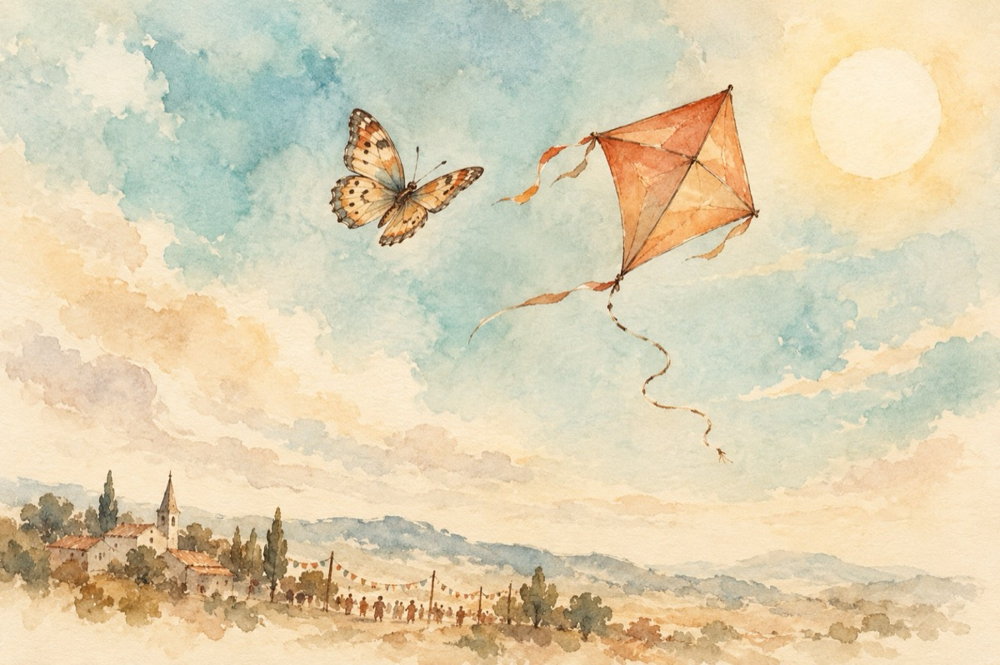

Fluturașul și zmeul
Jos e o petrecere
Sus e o întrecere
Fluturașu-ntr-una zboară
Zmeul nu poate de sfoară.
Haide zmeule, nu sta
O să pierzi întrecerea
Te învârte și fentează
Sforicica o retează.
Ura, bucurie mare
Zmeul și cu fluturașul
Zboară veseli câtre soare
Jos e mare sărbătoare!
Vasile Groza